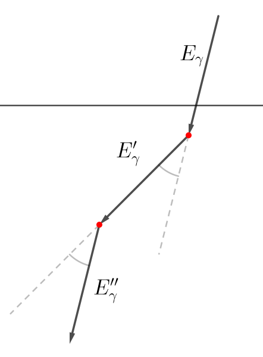
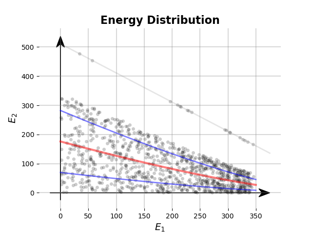

The energies of a Compton scatter chain are correlated through the Compton scattering equation as well as the Klein-Nishina distribution. This means that some vital statistics must exist, and perhaps be possible to calculate in closed expression. In this post I wanted to give it a try and compare it to some simulated data.
I recently got a hold on some simulated list-mode data of photons interacting with a silicon volume. That is, a list $$ [\mathbf{r}_1,E_1,\mathbf{r}_2,E_2] $$
of
- interaction position $\mathbf{r}_1$ of Compton event with
- the deposited energy $E_1$ of the scattered electron and
- the interaction position $\mathbf{r}_2$ of either a photoabsorption or another Compton scatter event following the first scattering event, with
- the corresponding deposited energy $E_2$ of the scattered electron. Something that occurred to me was that basically all of the statistics are known in this problem. That is, for a scatter series as in figure 1 we have that Ref. [1]
$$ E_\gamma’ = \frac{E_\gamma}{1+\varepsilon(1-\cos\theta)} $$
with $\theta$ being the scatter angle and $\varepsilon = E_\gamma’/E_\gamma$, and canonical for $E_\gamma’’$ with $\theta’$ and $\varepsilon’$ defined similarly to above.

Figure 1: A serie of two scatter events.
Since the scatter angle is inherently stochastic with a probability density function given by a function $\mathrm{pr}(\cos\theta)$ proportional to the Klein-Nishina distribution, Ref. [2], i.e. $$ \mathrm{pr}(\cos\theta) \propto \frac{1}{[1+\varepsilon(1-\cos\theta)]^2} \left[1+\cos^2\theta + \frac{\varepsilon^2(1-\cos\theta)^2}{(1+\varepsilon(1-\cos\theta))^2}\right] $$ That means that we can calculate the moments of $E_\gamma’$ and $E_\gamma’’$. For instance, $$ \mathbb{E}\left[E_\gamma’\right] = E_\gamma\int_{-1}^1\mathrm{d}(\cos\theta)\frac{\mathrm{pr}(\cos\theta)}{1+\varepsilon(1-\cos\theta)}. $$ For $\varepsilon = 1$, i.e. $E_\gamma = 511~\mathrm{keV}$, we can calculate the expectation value of the deposited energy $E_1$: $$ \mathbb{E}\left[E_1\right] = 511\times\left[\frac{\log(3)-\frac{28}{81}}{\frac{40}{9}-\log(3)}\right]~\mathrm{keV} \approx 511\times 0.656\mathrm{keV}\approx 335\mathrm{keV} $$ For a given $E_\gamma’$ we can calculate the expectation value and standard deviation of $E_\gamma’’$ in the same manner as above. I got some data simulating the setup in figure (2).
 Figure 2: Geometry of the simulation.
Figure 2: Geometry of the simulation.
The events are the positions and energies as described above, and illustrated in figure (3)
 Figure 3: The events in the silicon solid.]]
Figure 3: The events in the silicon solid.]]
In figure (4) the simulated data is shown together with the expectation value (red line) and one standard deviation away from the expectation value (blue lines) as well as the line where photo absorption happens (gray).
 Figure 4: Energy distribution of some simulated list-mode data and its statistics.]]
Note that the realizations get denser at $E_1 = 335~\mathrm{keV}$, as calculated above.
Conclusion#
The result in figure 4 looks kind of right. However, I implicitly assume that $E_1$ is given when calculating the expectation value of $E_2$. This is of course true, since the events are causal. What could have been taken into consideration is the distribution of $E_1$ and subsequently how the pair $(E_1,E_2)$ is distributed in the energy space. I could have gone further in the statistics, and maybe I will in the future, but I will leave it like this for now.
References#
[1] A. H. Compton 1923 A Quantum Theory of The Scattering of X-Rays by Light Elements Phys. Review 21.5 483-502, Link
[2] Klein O and Nishina Y 1929 Uber die Streuung von Strahlung durch freie Elektronen nach der neuen relativistischen Quantendynamik von Dirac Z Phys. 52 853–69, Link